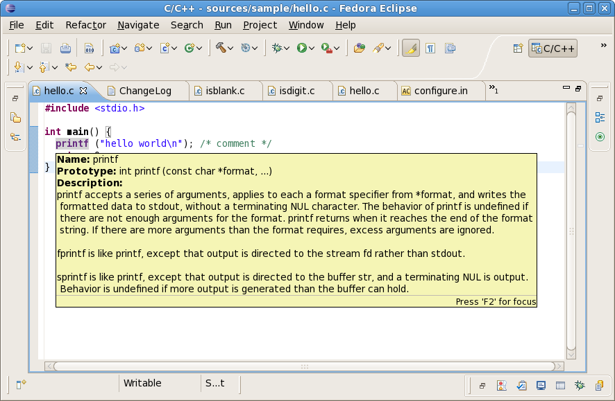

Linux Tools - Libhover Plug-in
Overview
The Linux Tools Libhover plugin provides a common interface for C library hover help to the CDT (C/C++ Development Tools) as well as a fundamental set of library hovers to choose from. The plugin provides a simple extension so that any number of additional libraries may provide hover help documentation without having to create any Java code. The general idea is that hover help documentation can be generated from the manual source or code source of a particular library.
Current Status
In conjunction with the CDT, the plugin supplies:- Glibc hover and completion support
- Newlib hover and completion support
- An Eclipse extension for adding future C library hovers
Future Plans
- libstdc++ support using doxygen documentation
- Generalized C++ support via libstdc++ doxygen format
Screenshots
Libhover in use
Demos
Try it out
Follow the instructions . <